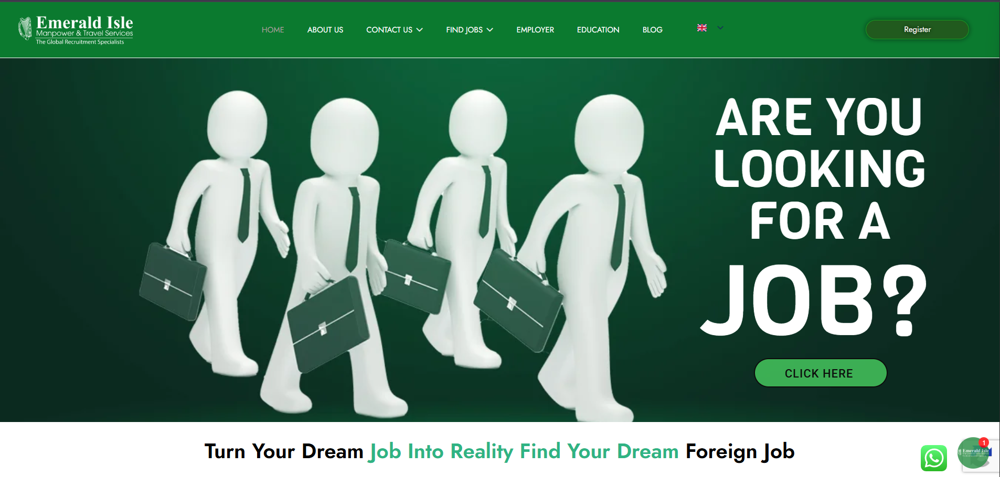
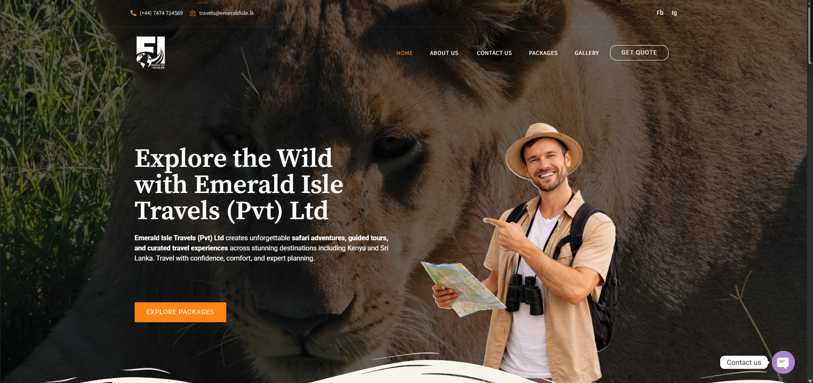
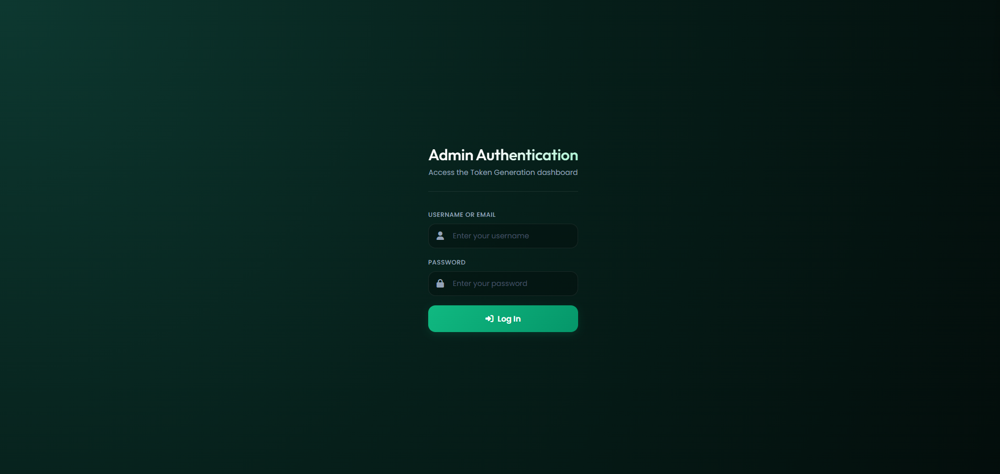

Business Websites
Modern responsive websites for companies, service providers, agencies, travel brands, and local businesses.
Freelance Web Developer • PHP • WordPress • Full-stack
I’m Amru Nizwar, a Software Engineer helping businesses turn ideas into professional websites, portals, dashboards, e-commerce experiences, and custom web applications.
About Me
I specialize in PHP development, WordPress customization, backend systems, API integration, database management, and modern frontend experiences. My focus is simple: build solutions that look professional, load fast, work smoothly, and support real business goals.
I have worked on recruitment websites, travel portals, e-commerce projects, browser-based games, admin dashboards, and token management tools — combining clean UI, secure backend logic, responsive layouts, and practical problem solving.
Company websites, booking portals, job platforms, dashboards, e-commerce pages, WordPress systems, APIs, and custom business tools.
Small businesses, agencies, startups, travel companies, recruitment firms, and clients who need reliable web development support.
Services
Designed for freelance clients first, while still showing recruiters clear proof of my development skills.
Modern responsive websites for companies, service providers, agencies, travel brands, and local businesses.
Theme customization, plugin integration, content management, landing pages, speed improvements, and maintenance.
Dashboards, portals, admin panels, booking systems, recruitment tools, and database-driven platforms.
PHP/Node.js backend logic, REST APIs, MySQL databases, authentication, integrations, and secure workflows.
Product pages, checkout-focused layouts, performance optimization, responsive design, and usability improvements.
Debugging, testing, Lighthouse audits, performance fixes, SEO-friendly layouts, and long-term support.
Featured Projects
Each project card gives clients a quick idea of the result before they click the live link or GitHub button.

Recruitment Platform • WordPress • PHP • MySQL
A recruitment-focused business website and internal workflow support project with responsive pages, content updates, WordPress customization, backend improvements, and admin-style tools.

Travel Platform • WordPress • PHP • JavaScript
A responsive travel and tourism website built for destination discovery, package presentation, gallery browsing, and client inquiries.

Admin Dashboard • JavaScript • UI
Dark admin console for token generation, queue management, printer control, reprint mode, and real-time style status tracking.
E-commerce • Jira • Selenium • Lighthouse
Team-based e-commerce project focused on responsive design, usability, performance checks, test planning, and optimization.
JavaScript • PHP • HTML • CSS
Interactive browser-based game with scoring logic, dynamic levels, and cross-browser compatible gameplay.
Process
Understand your business, goals, users, pages, features, and timeline.
Define structure, content, UI direction, database needs, and development milestones.
Build clean, responsive frontend and reliable backend functionality.
Test, optimize, deploy, fix issues, and support future improvements.
Tech Stack
HTML5, CSS3, JavaScript ES6+, React.js, Flutter
PHP, Node.js, Flask, RESTful APIs
MySQL, MongoDB
WordPress theme customization, plugin integration, maintenance
Git, GitHub, Jira, Selenium IDE, Figma, Power BI, AWS
Debugging, testing, performance optimization, responsive design
Experience
Emerald Isle Manpower
Emerald Isle Manpower
Why Work With Me
Education